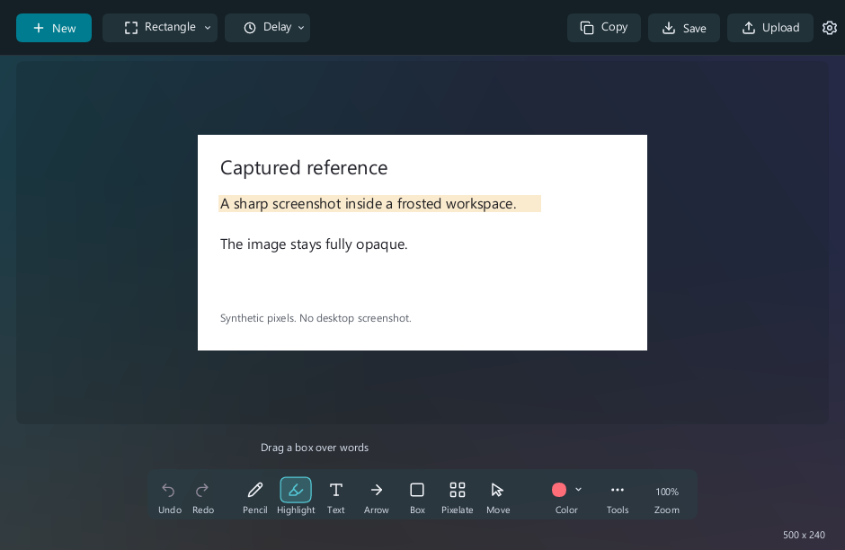
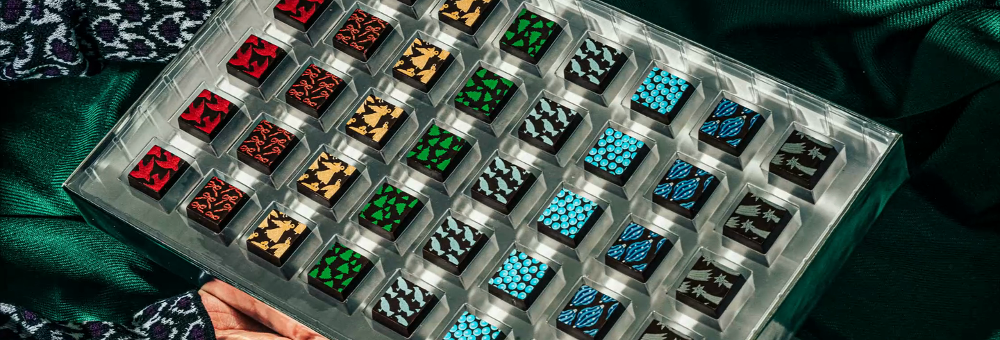

See which accounts need attention, explain changes in sales, review ads and prepare the next brief.
See the marketing tools →I build AI tools that make marketing work easier.
I lead paid media and build with Claude Code, OpenAI Codex and ChatGPT. I want AI to help my team get work done without making their job more complicated.
That means knowing what is happening in an account, reviewing the ads and giving a designer a brief they can use. I build around those jobs.

Paid-media leadership$50M+ annual spend across 50+ clients and 60+ accounts.
Building and improving the tools800+ sets of code changes reviewed and merged, July 15–October 12, 2026.
Award-winning team work2026 Meta Agency Award. Detailed planning and campaign evidence below.
Small tool.
Daily difference.
Snipping Tool UL
A native Windows screenshot app with clear editing tools, timers, hotkeys and sharing. No webview. No permanent redraw loop.
Its cached preview reduced CPU render time by 60.7% and retained image-buffer bytes by 37.2% in a synthetic 4K internal benchmark.
4K editor rendering: full-image path versus cached viewport.
See the screenshot tool →
The work behind a $2.84M holiday season.
Compartés · 2026 Meta Agency Award
See the $200,000 budget plan, original creative and decisions behind the campaign. During Black Friday, Meta purchases rose 120.7% on 99% more spend.
Team results. Shopify sales: November–December 2025. Black Friday comparison: nine weekday-aligned days, year over year.
Read the full campaign and evidence →
What I have been building.
The tools, team work and marketing results behind what I do with AI.
Help AI remember the project, past decisions and how I want the work done.
See how it works →Capture a screenshot, add a mark and paste it. Keep the app light and the image sharp.
See the screenshot tool →See the budget plan, the ads and the results behind our award-winning holiday campaign.
See the campaign plan and results →Give the designer a clear message, the right product information and a useful idea to test.
See how I plan and review ads →Clear expectations, useful training and help with the account work people do every day.
See how I train and support the team →Turn an ad planner into an import file while keeping the copy, links and images together.
See how I prepare ad-import files →Have drafts and research ready before I start work, with a short brief I can read on my phone.
Read a sample morning brief →Keep my projects, AI chats, tasks and code changes in one place.
Read about Summoner →A small character that progresses as I work in Claude Code. It runs locally without extra AI calls.
Read about Claude Quest →Marketing results from ecommerce, software, events and team leadership.
Read the results →Results from the work.
More sales, less manual work and hundreds of reviewed improvements to the tools. Read how each result happened.
| Result | What it describes | Evidence |
|---|---|---|
| Meta purchases +120.7% | Compartés Black Friday/Cyber Monday, nine aligned days year over year. Spend +99%, cost per purchase −9.8%. | Campaign plan, ads and results |
| 800+ merged pull requests | Authored private-product work, July 15–October 12, 2026. Feature development, fixes and maintenance. | New features and fixes |
| 20+ hours a week saved | Workflow automation, reporting and AI-assisted analysis across my broader marketing work. | Making marketing work easier |
| Conversion rates doubled | Software consulting, 2015–2020: landing-page and checkout improvements. | Growth experience |
How I work.
Find the part of the job that is harder than it should be. Build something useful and help the team use it.
I bring years of marketing and team experience to the build. I know the questions a strategist needs answered and the details that can turn a useful tool into extra work.
I use AI to research, plan, build, draft and fix things. I stay responsible for the direction and the result. The goal is a better way to do the work, with clear sources and a next step someone can understand.